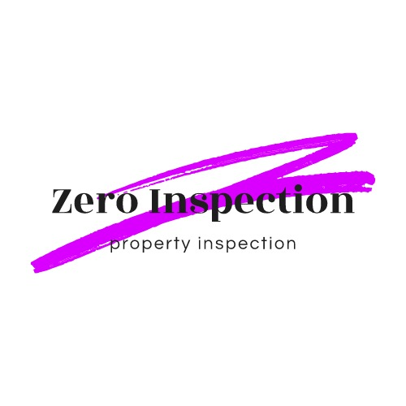
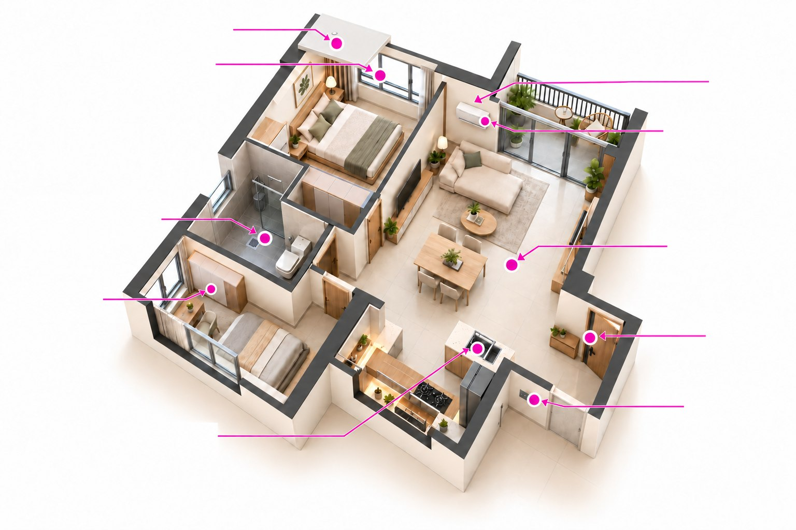

VP & pre-handover
For newly completed properties. Document visible defects and prepare for developer submission before your next handover step.
NEW HOMES & CONDO UNITS
KUALA LUMPUR & SELANGOR
Property inspection in Kuala Lumpur & Selangor
Your property deserves more than a quick walkthrough. We inspect the details, document the defects, and help you understand your next step.
For new homes, subsale properties & commercial spaces.

WHAT WE INSPECT
Explore the finishes, fixtures and systems we check. Bathroom drainage testing is included in the Water Ponding and Comprehensive packages.
Swipe sideways to read all inspection labels.
Illustrative property layout. Air-conditioning and fixtures are checked where present; confirm the applicable scope when enquiring.
01 / YOUR PROPERTY, OUR FOCUS
From receiving your keys to evaluating your next purchase, choose an inspection suited to your property.
For newly completed properties. Document visible defects and prepare for developer submission before your next handover step.
NEW HOMES & CONDO UNITSUnderstand the condition of a second-hand property, with attention to signs of structural issues and finishing defects.
BUYERS & PROPERTY INVESTORSInspections for offices, retail spaces and shoplots, with attention to safety, compliance-related concerns and finishing defects.
OFFICES, RETAIL & SHOPLOTS02 / CHOOSE YOUR INSPECTION
Tell us your property type and floor area. We’ll guide you to an appropriate scope and provide a personalised quotation.
THE ESSENTIAL CHECK
A systematic inspection of the key finishes and systems in your property.
Typical duration: 1–2 hours for around 1,000 sqft.
Enquire about Standard ↗GO BEYOND THE SURFACE
Everything in Standard, with an additional check on water flow and drainage performance.
A MORE COMPLETE ASSESSMENT
Our extended scope combines the Standard Inspection with drainage and waterproofing tests.
Hand over your key and collect it after 2 days. Access to the unit below is required for inspection on the same day.
Enquire about Comprehensive ↗03 / FROM CHECK TO NEXT STEP
Clear documentation and practical guidance, with support that continues after the inspection.
Illustrative report overview
Share your location, property type, floor area and preferred timing. We’ll confirm the scope and access arrangements.
We carry out the agreed inspection and tag identified defects with removable stickers for easy reference.
Soft-copy reporting or app submission within 48 hours, with photo documentation and developer submission guidance.
Free after-sale advisory support via WhatsApp or phone to help you understand the findings.
04 / BEFORE YOU BOOK
Our main coverage is Kuala Lumpur and Selangor. Inspections in other states can be arranged with additional transport charges, quoted case by case.
No. A water ponding test checks water flow and drainage performance. Waterproofing testing is a separate scope included in the Comprehensive package.
You hand over the key and collect it after 2 days. An inspection of the unit below is required on the same day, so access must be coordinated in advance. Contact us to confirm the arrangements.
Your deliverables include a professional defect report in PDF or app submission, photo documentation and developer submission support guidance. Soft-copy reporting or app submission is provided within 48 hours.
The area includes the car porch, backyard and built-in area. Share the property details with us so we can confirm the scope and quotation.
The quoted inspection covers one visit. A separate revisit caused by customer arrangements, a second inspection, or a second report revision carries an additional charge. We’ll confirm the applicable terms before you proceed.
We support English, Chinese and Malay. Let us know your preferred language when you contact us.
ADDITIONAL SERVICE · MALAYSIA-WIDE
We help with Wi-Fi and broadband internet service applications for residential and commercial properties throughout Malaysia.
Enquire about internet service ↗PROVIDER OPTIONS
Other providers are also available. Share your installation address and tell us whether it is a home or business premises so we can check suitable options.
Applications are supported nationwide. Provider coverage, plans and installation availability depend on your address and the provider’s requirements.
LET’S TAKE A CLOSER LOOK
Send your property location, type and floor area.
We’ll help you choose the right inspection.
WORKING HOURS
COVERAGE
Kuala Lumpur & Selangor
Other states by arrangement.